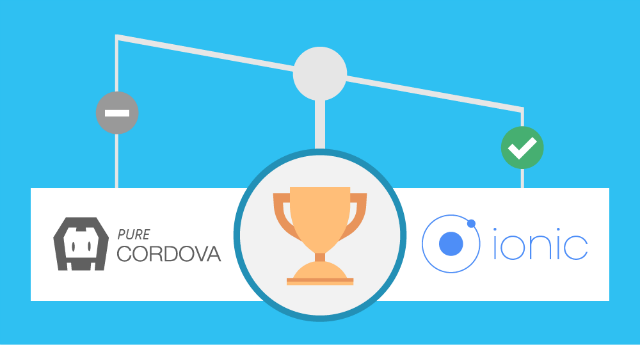
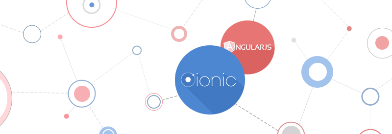

Sobre
Afinal de contas, o que é o Ionic? E o que ele tem a ver com o Cordova/Phonegap? Lembra quando falamos de desenvolvimento mobile? App nativa e híbrida? Ai que entra o Ionic, ele é um framework que usa AngularJS e SASS para criar aplicações com um visual muito similar ao de apps nativos. Oferecendo diversas bibliotecas de CSS e Javascript para AngularJS, ele simplifica o desenvolvimento e ajuda a produzir apps com um visual muito agradável, sem dar muito trabalho ao desenvolvedor, além de não exigir muito conhecimento prévio, apenas o da tríade.
Vale a pena falar também que o Cordova, é basicamente um app “genérico” que encapsula o código feito com o Ionic, fazendo com que possamos ter um app que pode ser publicado nas lojas e instalado em qualquer aparelho com os principais sistemas operacionais do mercado. Em suma, a união do Ionic com o Cordova, temos um ambiente de desenvolvimento de apps muito poderoso.
Um fator extremamente importante quando desenvolvemos apps para Ionic é a velocidade com que criamos as apps, isso é realmente insuperável, até mesmo para tecnologias ágeis de desenvolvimento que não conseguem superá-lo no quesito velocidade já que em poucas horas podemos ter um app funcionando.
Ser baseado em angular também significa que quem já trabalha com ele vai conseguir reutilizar no ionic todo o conhecimento previamente adquirido. O ionic também conta com uma excelente documentação e com um fórum próprio bastante ativo onde perguntas são respondidas em até poucos dias. Recentemente o ionic começou a oferecer também alguns serviços, como o Ionic Creator, Ionic View e as Push Notifications. Um último recurso do ionic que faltou falar é o ngCordova.
O objetivo do ngCordova é empacotar os plugins do cordova para dentro de serviços angular, facilitando assim a utilização desses plugins dentro de um projeto ionic. É importante entender que o ngCordova não é obrigatório para o uso de plugins, ele é apenas um facilitador para integrar melhor com o angular os plugins do cordova.
O Ionic oferece ainda uma série de componentes prontos e uma ferramenta via linha de comando (Ionic CLI) para construir, iniciar, executar e emular um aplicativo Ionic, ele também é baseado no Apache Cordova, logo, os utilitários do Cordova podem ser usados para build, deploy e testes dos aplicativos. Com as APIs Cordova, podemos acessar recursos nativos sem escrever qualquer código nativo.
Contudo, sua ideia principal consiste em, utilizando tecnologias web, possibilitar o desenvolvimento de aplicações para dispositivos móveis com foco em performance, design e otimizações.